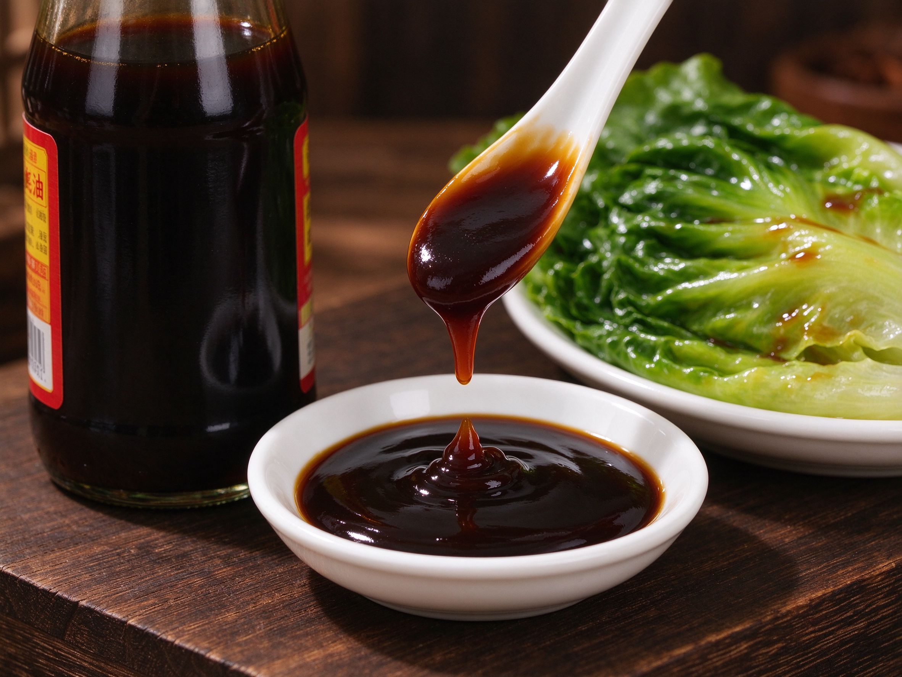

Oyster Sauce: The Umami Secret Every Chinese Pantry Needs
If soy sauce is salt, oyster sauce is flavor — a thick, dark, gloriously savory condiment that turns plain greens and stir-fries into something that tastes straight from a restaurant. It's the closest thing Chinese cooking has to a magic ingredient.
What Is Oyster Sauce, Really?
Invented in 1888 when a Cantonese restaurateur simmered oysters in brine for hours and noticed the thick, umami-rich concentrate, oyster sauce is made by reducing oyster extract with soy, sugar, and salt into a glossy brown syrup. Don't worry — good oyster sauce tastes rich and savory, not "fishy." It's the backbone of Cantonese stir-frying, from chow mein to glazed greens.
How It Differs From Soy Sauce
Soy sauce gives saltiness and depth; oyster sauce adds a round, almost meaty sweetness and body. They're best friends — nearly every Cantonese stir-fry uses a splash of both. If you only know one, start with our soy sauce guide, then add oyster sauce to unlock the next level.
How to Pick a Good One
- Check the first ingredient — it should be oyster extract or oyster juice, not "oyster flavoring."
- Real oyster content — premium brands list it clearly; cheaper ones lean on salt, sugar, and MSG.
- Color and texture — dark, glossy, and thick enough to coat a spoon, not watery.
- Avoid — bottles with caramel color first on the label; you're paying for dye, not flavor.
Where It Shines
Stir-fried greens
The classic: blanch or quickly stir-fry greens, then add a spoonful of oyster sauce to the hot pan with a little garlic — that glossy, savory coating turns plain greens into a dish people fight over.
Stir-fries and noodles
Add a tablespoon to any chow mein, fried rice, or vegetable stir-fry for instant depth. It clings and glazes in a way soy alone can't.
Marinades
Oyster sauce is the quiet hero in many meat marinades — try it in char siu or simple chicken, where it adds savory body that honey and soy alone miss.
Storage and Vegan Options
Store opened oyster sauce in the fridge; it keeps for months. Look for mushroom oyster sauce (素食蚝油) for a plant-based version — mushroom concentrate mimics the umami beautifully and works in the same dishes.
A Quick Rule of Thumb
When a recipe feels "flat" and you're not sure why, a half-teaspoon of oyster sauce often fixes it. It's the condiment that makes home cooking taste like it came from a wok over a roaring flame — even when it didn't.